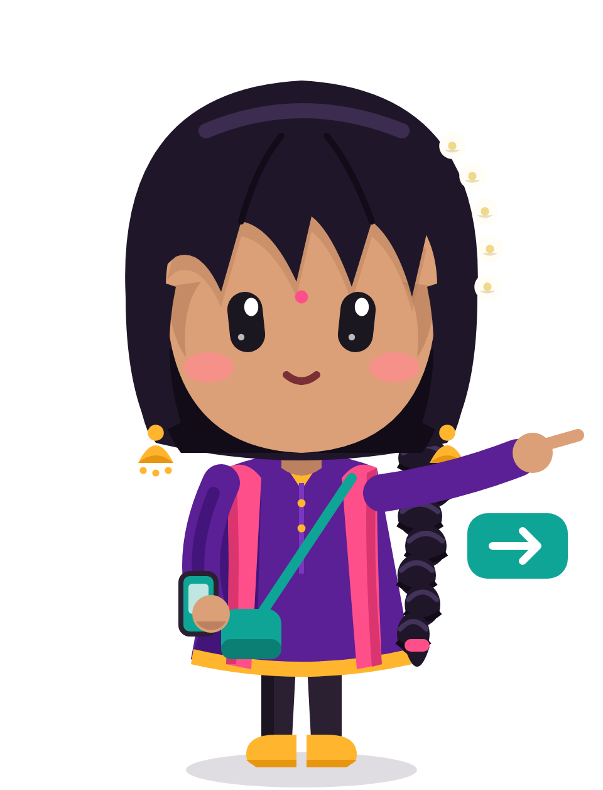

How to reach
Koyambedu → Lakshmi kiosk, Anna Nagar
Transit 24 min
Walk 52 min
Auto 14 min
SAFEST
FREE
24 min
9:40 – 10:04
₹0
Walk 2 min
›
70
18 min
›
Walk 4 min
Busy stops · 5 shops open on the walk · Kavya nearby
FASTEST
17 min
9:42 – 9:59
₹20
Walk 4 min
›
Metro
6 min
›
Walk 7 min
7 min walk on a quiet street after the station
31 min
9:45 – 10:16
₹0
Walk 1 min
›
21G
›
5D
26 min
1 change at Anna Nagar Arch · well-lit

At this hour, bus 70 is safer than the metro: the walk at the end is on a busy road.
Sample data for demo